Префектура Ниигата · Нагаока · праздники
Фейерверк Нагаоки: залпы над рекой Синано в память о погибших и ради мира
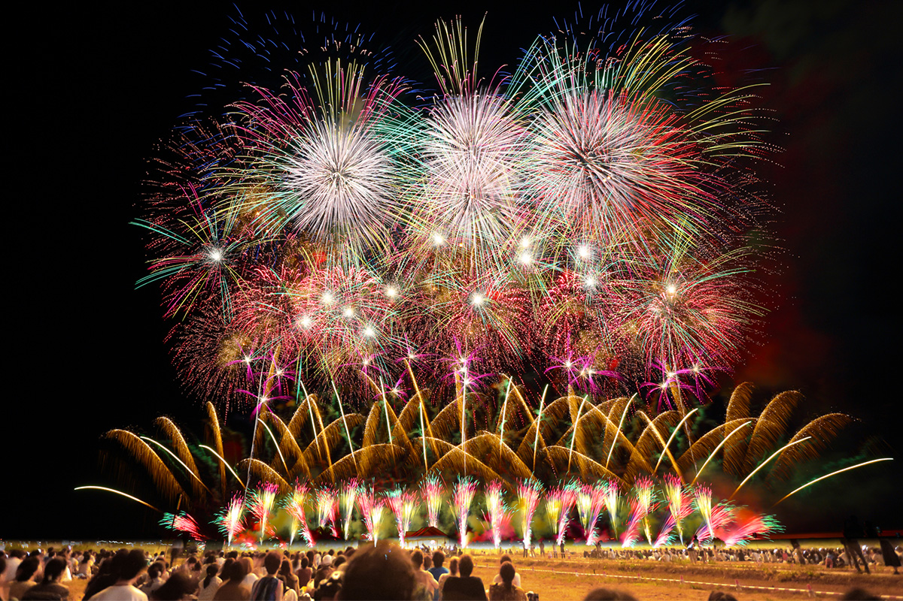
Фейерверк фестиваля Нагаоки входит в тройку великих фейерверков Японии, и каждый год на него приезжает около миллиона человек. Начинался же сам праздник не как шоу, а как поминовение погибших и клятва восстановить город.
Истоки
Почему фейерверки запускают над водой
Фейерверк был одним из главных героев японского лета задолго до Нагаоки. В Японию он попал в самом начале периода Эдо как подарок из-за моря. К тому времени в стране уже были люди, которые научились обращаться с порохом благодаря фитильным ружьям, завезённым раньше, и они переняли новое искусство.
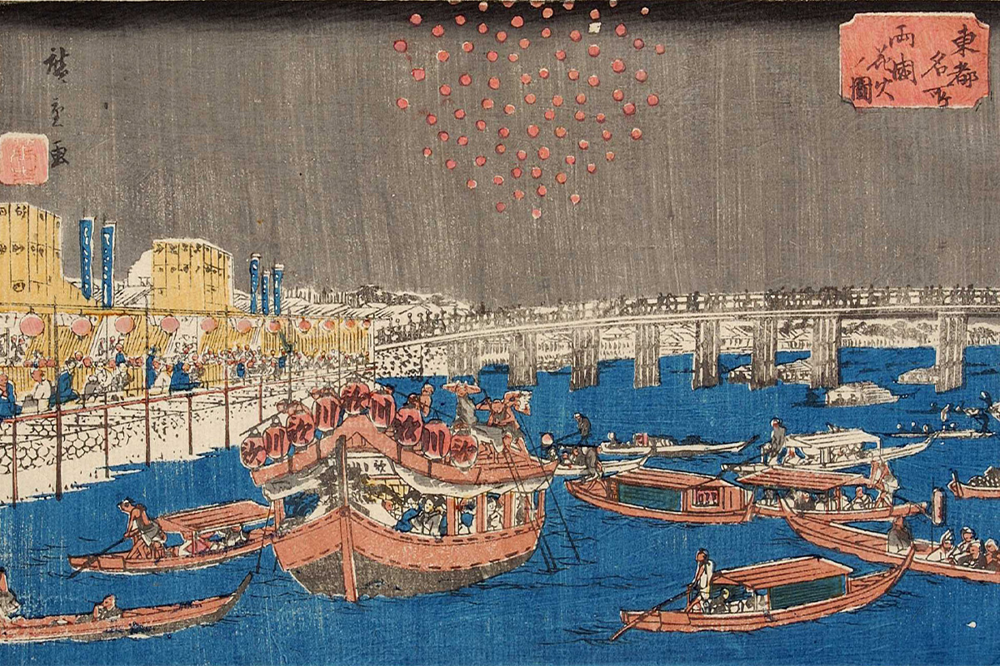
Кондиционеров не было, и после заката люди спасались от жары лишь тем, что выходили на улицу подышать прохладой. Им хотелось развлечений, которыми можно наслаждаться ночью под открытым небом, и фейерверк пришёлся как нельзя кстати. Так родился обычай встречать летние вечера огнями. Но фейерверк оставался игрой с огнём, и власти Эдо, опасаясь пожаров, не раз запрещали его в городе.
Выход нашли у воды. Залпы стали запускать с речных берегов, а смотреть на них с лодок и с набережных. Огонь на воде летом в Японии связан и с поминовением: так провожают души умерших, которые возвращаются домой в праздник Обон. Со временем в некоторых местах и фейерверки стали запускать в утешение душам. И всё же по грохоту и размаху огня фейерверк куда праздничнее поминальных фонариков, поэтому от него ждали всё большей роскоши и красоты.
Хиросигэ Утагава (1797–1858), мастер гравюры укиё-э, прославился сериями видов Эдо, и на одной из них запечатлён как раз такой вечер на реке. Тогда залпы оплачивали богатые горожане, а смотрели все вместе. Пиротехнику хотелось услышать: «Такого огня, как у него, больше ни у кого нет». Спонсору хотелось, чтобы говорили о его щедрости, а заодно и о его лавке. Самолюбие ремесленника и тщеславие заказчика в хорошем смысле двигали технику вперёд. Желание показать «то, чего ещё никто не видел» живо и среди нынешних пиротехников, которые сами делают и запускают свои заряды и год за годом ищут новые формы.
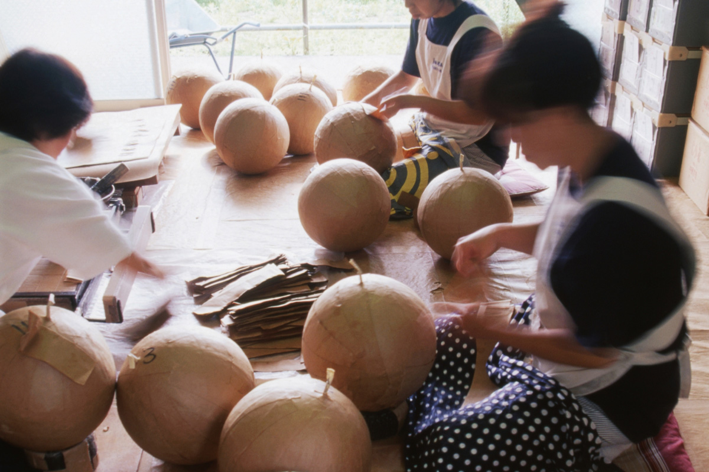
История
Праздник, который родился после бомбёжки
По размаху фейерверк фестиваля Нагаоки уступает в Японии немногим. Его запускают с поймы реки Синано, которая течёт через город.
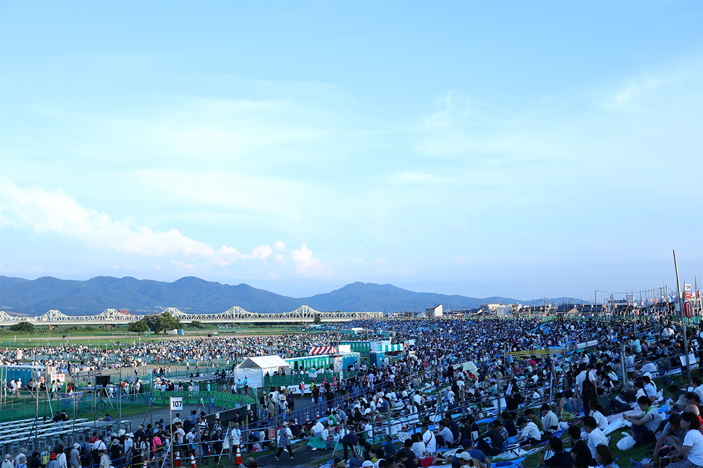
Сам фестиваль Нагаоки начался 1 августа 1946 года. Ровно годом раньше, 1 августа 1945 года, незадолго до конца войны, город пережил массированный авианалёт. За 1 час 40 минут сгорело 80 процентов застройки центра, погибли более 1480 человек. Чтобы утешить души погибших, ободрить горюющих и дать клятву восстановить город, устроили «Праздник возрождения Нагаоки». В 1951 году он стал фестивалем Нагаоки, а позже 2 и 3 августа объявили «днями фейерверка».
Сами фейерверки в Нагаоке старше фестиваля. Считается, что впервые здесь запустили 350 зарядов в 1879 году на празднике местного святилища Хатимана. В Нагаоке часто показывали самые новые фейерверки своего времени, и о городе заговорили по всей стране. Война прервала традицию, но в 1947 году залпы снова поднялись над рекой. Фестиваль открывается 1 августа праздником мира, а 2 и 3 августа над Синано идёт большой фейерверк.
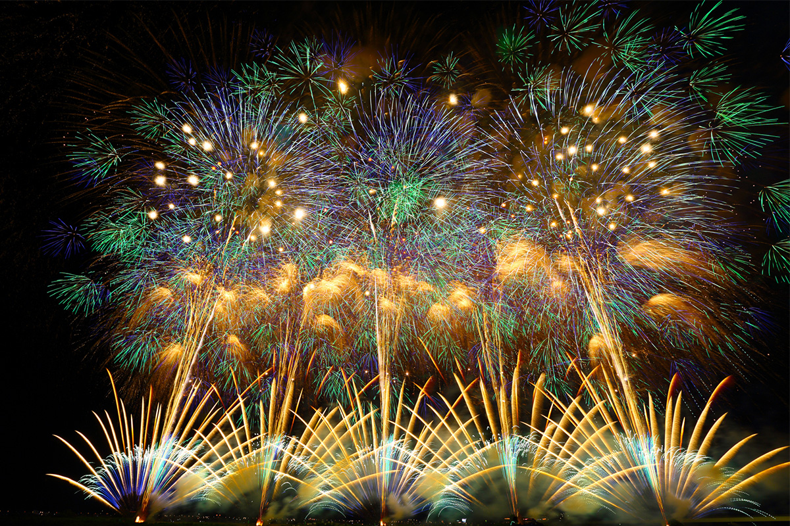
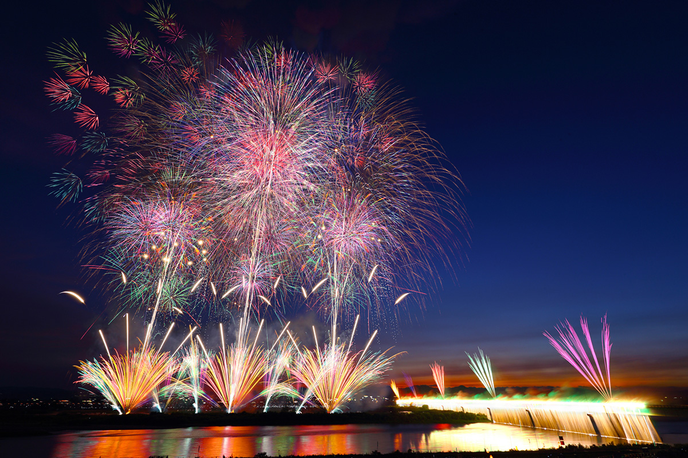
Мастер
Сэйдзи Касэ, легенда фейерверка Нагаоки
У славы Нагаоки есть свой герой. Сэйдзи Касэ стал пиротехником в 1949 году, через три года после первого праздника возрождения. Именно он возродил гигантский шар сё-сансяку-дама, главную гордость местного фейерверка. В 2022 году программу запускали шесть компаний, а долгие годы весь фейерверк Нагаоки делала одна, которую возглавлял он.
Память
Три белых залпа в 22:30
Всё внимание обычно достаётся пышным и изобретательным залпам, но о главном в Нагаоке не забывают. 1 августа в 22:30, в тот самый час, когда в 1945 году начался налёт, в небо поднимаются три белых заряда, а в храмах города звонят колокола в память о погибших. Поминальные залпы открывают и оба вечера большого фейерверка 2 и 3 августа: праздник по-прежнему напоминает о горе войны и о молитве за мир.
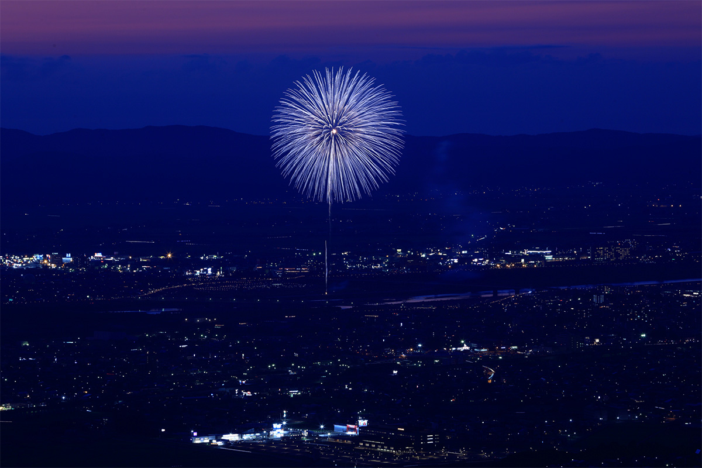
Программа
Что поднимается над рекой Синано
Масштаб под стать одному из главных фейерверков Японии. Залпы один за другим заливают светом небо над городом, и смотреть здесь стоит прежде всего на мастерство пиротехников.
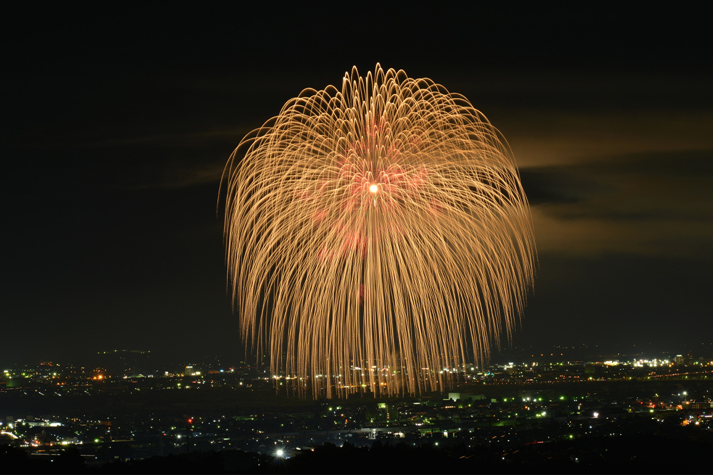
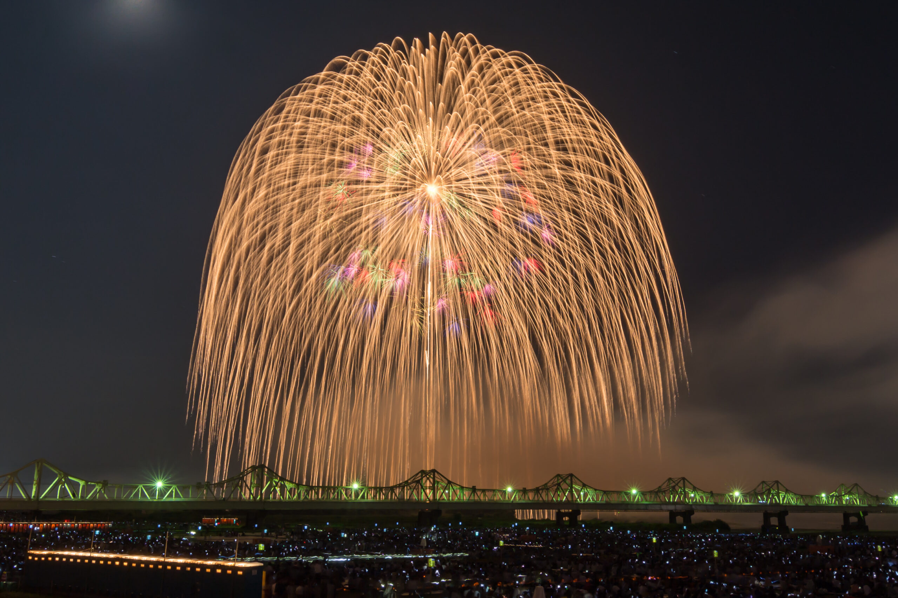
Ещё один знаменитый номер называется «Феникс». Его придумали после землетрясения Тюэцу 23 октября 2004 года как молитву о восстановлении. Это сверхширокий «стармайн», каскад залпов, который растягивается по небу на 2 км: над рекой одна за другой взлетают золотые огненные птицы. Его запускают в благодарность за помощь, пришедшую со всей страны, в поддержку всех пострадавших от бедствий районов и ради прочного мира.
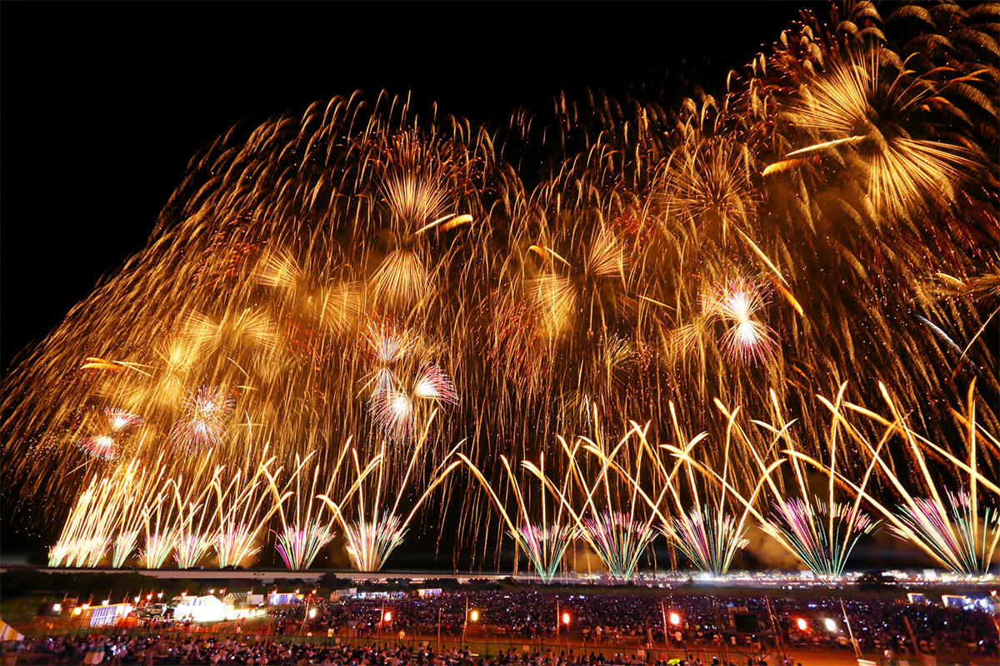
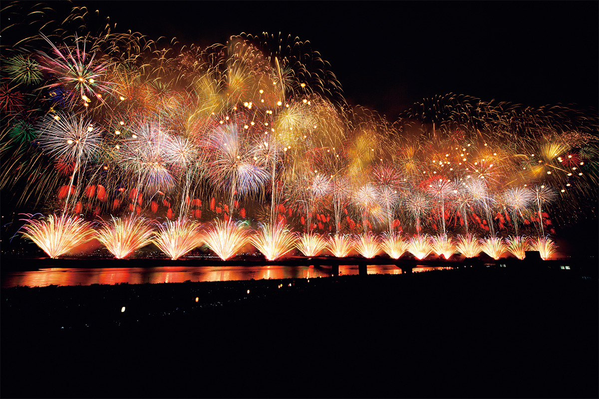
Широкий «стармайн» впервые запустили в 1996 году в честь 90-летия статуса города. Залпы поднимаются одновременно из пяти точек, и над рекой разворачивается пёстрое световое шествие.
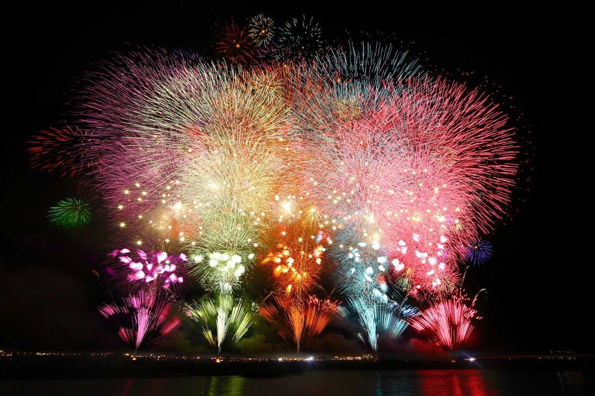
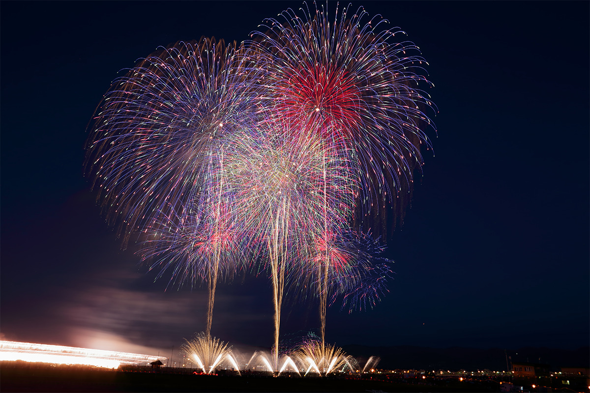
Номер «Цветы этого неба» впервые показали в 2012 году, когда вышел фильм «Цветы этого неба: история фейерверка Нагаоки». Под главную тему фильма небо целиком заполняют разноцветные цветы, в которые горожане вложили надежду на мир. С 2008 года в программе есть и фейерверк «Тэнтидзин» в честь исторического телесериала NHK с тем же названием. Он рассказывает о жизни Канэцугу Наоэ (1560–1620), полководца, связанного с Нагаокой: залпы поднимаются максимум из девяти точек и заполняют светом всё летнее небо.
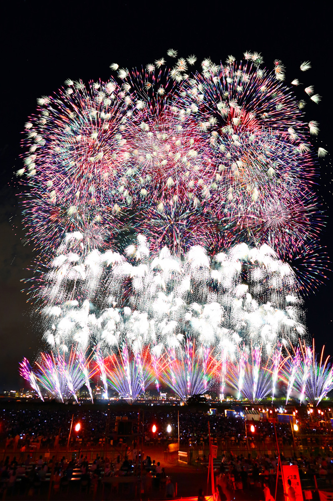
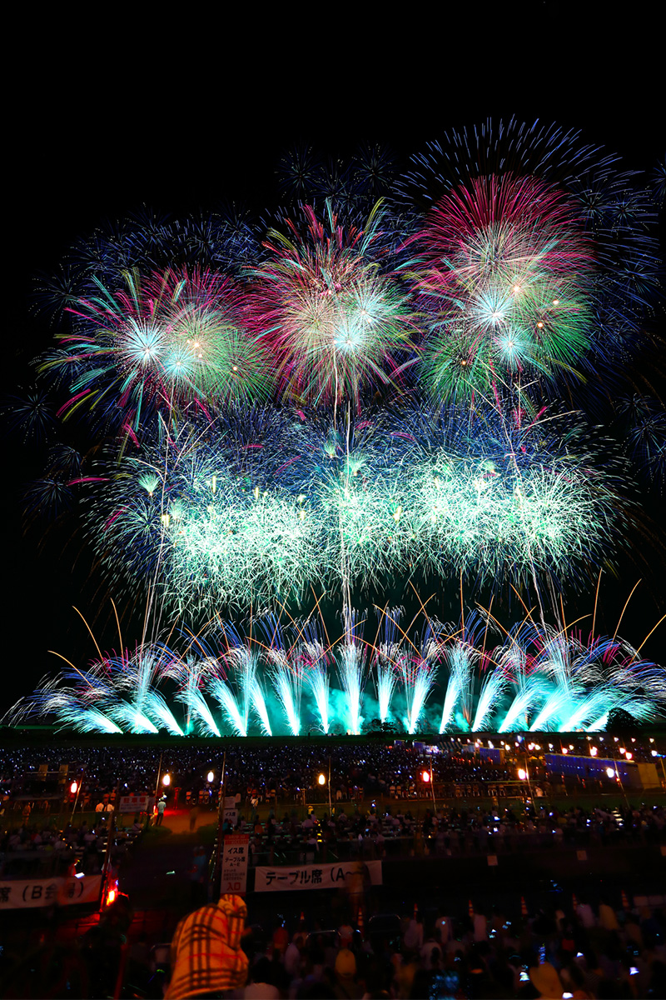
Фейерверк фестиваля Нагаоки
- Даты
- ежегодно 2 и 3 августа; в 2026 году 2 августа (воскресенье) и 3 августа (понедельник). В небольшой дождь проводится, в непогоду переносится
- Адрес
- префектура Ниигата, Нагаока, пойма реки Синано ниже моста Тёсэй
- Как добраться
- от станции JR Нагаока пешком около 30 минут; на машине от развязки Нагаока скоростной дороги Канэцу по дорогам 8 и 351 около 4 км
- Телефон
- +81 258-39-0823 (Фонд фейерверков Нагаоки)
Круглый год
Фейерверк Нагаоки вне августа
В Нагаоке фейерверк стал частью городской культуры. С его историей и предысторией можно познакомиться и в другое время года: в придорожной станции «Нагаока ханаби-кан» работает музейный магазин фейерверка Нагаоки.
Придорожная станция «Нагаока ханаби-кан»
- Адрес
- префектура Ниигата, Нагаока, Кита-мати, 707
- Как добраться
- на машине около 5 минут от развязки Нагаока скоростной дороги Канэцу
Фото: Фонд фейерверков Нагаоки.